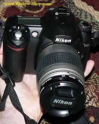
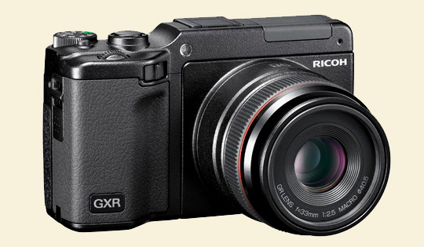

Naliax Photo
Waterproof, shockproof, freezeproof.Super-fast shooting,GPS a WiFi,Advanced Movie Mode ,Creative Modes In Stock for Home or Work Delivery Collect at Store - Available 1 year guarantee included. Extend cover to 3 years with Jessops Care Plan £89.00

Waterproof, shockproof, freezeproof.Super-fast shooti,GPS a WiFi,Advanced Movie Mode,Creative Modes In Stock for Home or Work Delivery Collect at Store - Available 1 year guarantee included. Extend cover to 3 years with Jessops Care Plan £89.00

For the serious Nikon digital SLR camera enthusiast we have the surprisingly portable Nikon D7000, packed with high-end image technologies it's perfect for any photographer who is ready to challenge themselves and improve their skills.
Tamron 70-300mm lens and a SanDisk 4GB card, all for less than £500. We also stock the impressive, yet affordable Nikon D5100 which features a 16.2 megapixel sensor as well as the ability to capture full HD movies in 1080p.

Part of our digital SLR camera range, our collection of Nikon SLRs includes the Nikon D3100 Digital SLR Camera super bundle which comprises the Nikon D3100, a Nikon 18-55mm VR lens,For the serious Nikon digital SLR camera enthusiast we have the surprisingly portable Nikon D7000,
For the serious Nikon digital SLR camera enthusiast we have the surprisingly portable Nikon D7000, packed with high-end image technologies it's perfect for any photographer who is ready to challenge themselves and improve their skills.Part of our digital SLR camera range, our collection of Nikon SLRs includes the Nikon D3100 Digital SLR Camera super bundle which comprises the Nikon D3100,